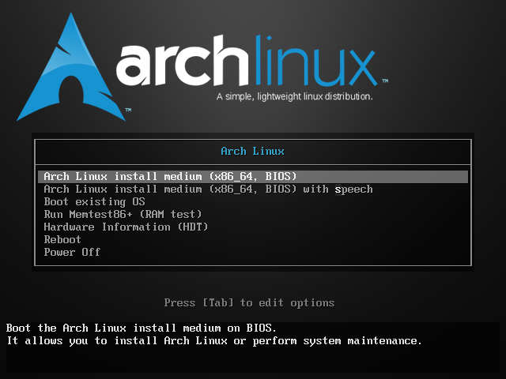

Arch Linux & Windows Dual-Booting System Installation Guide
Introduction
Installing Arch Linux is not an esay thing in any way, especially for a dual-booting system. Ensure you grasp basic skills of searching and asking questions, and basic English reading profession to read warning and error messages.
Also, this post records some issues encountered in usage of dual-booting Arch Linux and Windows systems, and their solutions. Check them in the last section Possible Issues During Normal Usage.
My computer is a ThinkBook 16P laptop with Intel Core i9-14900HX, NVIDIA RTX 4060 Laptop GPU, 32 GB RAM and 5 TB SSD. Systems currently installed are Windows 11 and Debian 13, and Arch Linux will take the place of Debian 13.
Preparations
Make an Arch Linux Bootable USB
You should get a USB drive with at least 4 GB capacity, and an Arch Linux ISO image from the official website. Make sure to download the version that matches your system architecture (usually x86_64 for most modern computers).
To create a bootable USB drive, you can use tools like Rufus (for Windows), balenaEtcher (cross-platform), or the dd command (for Linux and macOS). Here we use Rufus as an example.
- Insert your USB drive into your computer, and open Rufus.
- Select your USB drive under Device.
- Click on SELECT and choose the Arch Linux ISO file you downloaded.
- Configure the Partition scheme and Target system type according to your system if necessary (usually the default settings are fine).
- Keep Format Options as default, and click START to create the bootable USB drive.
- If there is an ISOHybrid image detected prompt, choose Write in ISO Image mode (Recommended) and click OK.
- Wait for the process to complete (
READYtext can be seen in Status part), then safely eject the USB drive.
If all goes well, you now have a bootable Arch Linux USB drive. I personally suggest not deleting the USB drive after installation, as it can be useful for future troubleshooting or reinstallation. You can see lots of its usage in last section Possible Issues During Normal Usage.
Ensure Disk Space
Skip this section if you want to install a single Arch Linux on your computer. Use sudo fdisk -l in Debian or Disk Management Tool in Windows and ensure you have at least 50 GB of unallocated space on your disk for Arch Linux installation. If you have an existing partition that you can delete or shrink, you can use that space.
The free space you leave must be unformatted and unallocated.
Configure System Time Shift
Skip this section if you are not dual-booting with Windows.
Linux and windows handle hardware clocks differently, which can lead to time discrepancies when switching between the two operating systems. Windows treats the hardware clock as local time, while Linux typically uses UTC.
To avoid time-related issues, you can configure Windows to use UTC for the hardware clock by changing a registry setting:
1 | Reg add HKLM\SYSTEM\CurrentControlSet\Control\TimeZoneInformation /v RealTimeIsUniversal /t REG_DWORD /d 1 /f |
Of course you can configure Arch Linux to use local time instead but is not recommended. Use:
1 | timedatectl set-local-rtc 1 --adjust-system-clock |
Installation Steps
Boot from USB Device
Get into the BIOS setting of your computer and set the USB device as the first boot option. Save and restart.
The method to enter BIOS varies between different manufacturers. Check your computer’s manual or look for instructions online if you’re unsure.
For Windows users, you can also access the BIOS via Settings > Windows Update > Advanced options > Recovery > Advanced startup. Click Restart now, then navigate to Troubleshoot > Advanced options > UEFI Firmware Settings and click Restart.
Once booted from the USB, you should see the Arch Linux boot menu. Select Arch Linux install medium (x86_64, UEFI) and press Enter.

If everything goes well, you should see a command-line interface with a prompt root@archiso ~#.
Internet Connection
A wired Ethernet connection is the best choice.
If you consider using Wi-Fi, using iwctl. However, firstly you should ensure your Wi-Fi device is unblocked in layer of hardware and software. Use rfkill list to check the status. If a device is blocked hard, find if there is a physical switch on your computer to enable it. If it is blocked soft, use rfkill unblock all to unblock it.
It is known that some Lenovo laptops such as ThinkBook and Xiaoxin may block the Wi-Fi device in software by default, so check it carefully. Otherwise you won’t be able to see any Wi-Fi networks later.
Use iwctl to enter the interactive prompt. Then, use device list to list all network devices and identify your Wi-Fi device name (usually something like wlan0).
Next, use station <device_name> get-networks to scan for available Wi-Fi networks. Replace <device_name> with your actual Wi-Fi device name. If this step goes well, you should see a list of available networks.
Use station <device_name> connect <SSID> to connect to your Wi-Fi network. Replace <SSID> with the name of your Wi-Fi network. You will be prompted to enter the Wi-Fi password if the network is secured. If this step finishes, exit iwctl by typing exit.
You can test your internet connection by ping -c 4 www.sjtu.edu.cn or any other public website. If you receive responses with 0% packet loss, your internet connection is working.
Time Synchronizarion
Use the following commands to synchronize the system clock with the hardware clock and enable NTP synchronization:
1 | hwclock --systohc --utc |
Use timedatectl status to check if NTP synchronization is active.
Disk Partitioning
Disk partitioning is the most complex step in the installation, especially when dual-booting with other operating systems. Be very careful when selecting partitions to avoid data loss.
In fact, if you are familiar with Linux file systems, partition the disk as you like, or even not partition at all (use the whole disk for Arch Linux). You should only ensure to mount EFI partition of Windows system to /boot later.
Here we will introduce a popular partitioning scheme for dual-booting with Windows:
/bootpartition, to store boot files and information. Often a 512 MB free space is enough. For BIOS systems, this partition is not needed; but for UEFI systems, it is required to mount the existing EFI partition of Windows here./swappartition, to provide virtual memory when physical RAM is insufficient. The size of this partition can vary based on your system’s RAM and usage needs. A common recommendation is to allocate swap space equal to your RAM size if you have less than 8 GB of RAM, or half your RAM size if you have more than 8 GB of RAM. For systems with large amounts of RAM (e.g., 16 GB or more), a smaller swap partition (e.g., 4 GB) may suffice./(root) partition, to store the main filesystem and all system files. Allocate at least 20 GB for this partition, but more is recommended if you plan to install many applications or store data on the root partition./homepartition, to store user data and personal files. Allocate the remaining free space to this partition for user data. This partition is optional but recommended for easier system maintenance and upgrades.
Mount Partitions
Use fdisk -l to list all disk partitions, and identify the partitions you created in the previous step. Then, clear those partitions and mount them to the appropriate directories:
1 | # /mnt |
Make sure to replace sdXN, sdYN, sdZN and sdWN with the actual partition identifiers for your system.
Install Arch Linux
For Chinese users, some localaizations may be needed to make the installation process smoother, and here I use reflector.
1 | reflector --country China --protocol https --sort rate --save /etc/pacman.d/mirrorlist |
where --country specifies the country for mirror selection, --protocol specifies the protocol to use (https is recommended for security), --sort sorts the mirrors by their download rate, and --save saves the selected mirrors to the specified mirror list file.
Run pacman -Syy to update the package database with the new mirror list. Then, use the following command to install the base system and necessary packages:
1 | pacstrap /mnt base base-devel linux linux-firmware vim nano networkmanager e2fsprogs |
where base is the essential package group for a minimal Arch Linux installation, linux is the Linux kernel, linux-firmware contains firmware files for various hardware devices, vim and nano are text editors, and networkmanager is a tool for managing network connections. You can add other packages you need to this command as well. For support of Windows NTFS partitions, you can also install ntfs-3g package.
During the installation process, operating system may ask you to select options for certain packages, and default options are usually fine. Just follow the prompts and complete the installation.
When the installation is complete, use the following command to generate an fstab file, which will be used to mount the partitions at boot time:
1 | genfstab -U -p /mnt >> /mnt/etc/fstab |
where -U option uses UUIDs to identify partitions in the fstab file, which is more reliable than using device names. The output is appended to the /mnt/etc/fstab file, which will be used in the new system.
Switch to the New System
arch-chroot is a command that allows you to change the root directory to the newly installed Arch Linux system on your disk. This is necessary to perform post-installation configurations and setup before rebooting into the new system. Run arch-chroot /mnt to enter the chroot environment, which uses root as the current user by default.
Set Users and Passwords
Run passwd to set a password for the root user. You will be prompted to enter and confirm the new password.
In normal usage, it is not recommended to use the root account for daily activities. Instead, you should create a new user account with regular privileges. Use the following command to create a new user:
1 | useradd -m -G wheel -s /bin/bash your_username |
where -m creates a home directory for the user, -G wheel adds the user to the wheel group (which allows the user to use sudo for administrative tasks), and -s /bin/bash sets the default shell to Bash. Replace your_username with your desired username, which should be lowercase and without spaces.
To enable the new user to use sudo, you need to edit the sudoers file. Use visudo command to safely edit the file:
1 | visudo |
Find the line that says # %wheel ALL=(ALL) ALL and uncomment it by removing the # at the beginning of the line. This allows all users in the wheel group to execute any command with sudo.
Set Hostname and Domain Name
The hostname is the name of your computer on the network. You can set it to anything you like, but it should be unique if you are on a network with multiple devices.
To set the hostname, use the following command:
1 | echo "your_hostname" > /etc/hostname |
Replace your_hostname with your desired hostname, which should be lowercase and without spaces.
The domain name is used in network configurations and can be set to a custom value or left blank if not needed. To set the domain name, you can edit the /etc/hosts file and add an entry for your hostname and domain name:
1 | 127.0.0.1 your_hostname.your_domain_name your_hostname |
Replace your_hostname with the hostname you set earlier, and your_domain_name with your desired domain name (or leave it localdomain if not needed). If you are confused about the domain name, ask your network administrator or just leave it as localdomain.
Install Microcode
Microcode is a layer of low-level code that helps the operating system communicate with the CPU. For Intel CPUs, you can install the intel-ucode package, and for AMD CPUs, you can install the amd-ucode package. This step is important for system stability and performance.
Install GRUB Bootloader
For traditional BIOS systems, use pacman -S grub os-prober to install GRUB and os-prober, which is a tool that detects other operating systems on your computer. Then, use grub-install --target=i386-pc /dev/sdX to install GRUB to the MBR of your disk (replace sdX with your actual disk identifier, e.g., sda).
For UEFI systems, use pacman -S grub efibootmgr os-prober to install GRUB, efibootmgr (a tool for managing UEFI boot entries) and os-prober. Then, use grub-install --target=x86_64-efi --efi-directory=/boot --bootloader-id=GRUB to install GRUB to the EFI partition (which is mounted at /boot).
os-prober is prohibited by default in Arch Linux for security reasons, so you need to enable it by editing the GRUB configuration file /etc/default/grub and adding the line GRUB_DISABLE_OS_PROBER=false. Then, use grub-mkconfig -o /boot/grub/grub.cfg to generate the GRUB configuration file, which will include entries for both Arch Linux and Windows.
ENSURE the commands above are executed with output.
Localization and Timezone
Set your timezone by creating a symbolic link to the appropriate timezone file in /usr/share/zoneinfo. For example, if you are in Shanghai, use:
1 | ln -sf /usr/share/zoneinfo/Asia/Shanghai /etc/localtime |
Then, use hwclock --systohc to synchronize the hardware clock with the system time.
Set your locale by editing the /etc/locale.gen file and uncommenting the line corresponding to your desired locale (e.g., en_US.UTF-8 UTF-8 for English). Then, use locale-gen to generate the locale.
Finally, create a /etc/locale.conf file and set the LANG variable to your desired locale (e.g., LANG=en_US.UTF-8).
Finish Installation
Now an Arch Linux system is installed on your computer and can be booted, although it does not look like an operating system yet. The following steps are optional, in order to smooth usage experience.
GUI Optimization
GUI sounds useless for a Linux user. But who will refuse a better interface? Mainstream of Arch Linux GUI environments are GNOME, KDE Plasma and XFCE.
Chinese Font Support
For Chinese users, you can install the noto-fonts package for basic font support, and noto-fonts-cjk package for better Chinese character rendering. You can also install wqy-zenhei or wqy-microhei packages for additional Chinese font options.
SSH Configure
SSH refers to Secure Shell, a protocol that allows secure remote access to a computer over an unsecured network. It is widely used for remote administration and file transfers.
SSH Server Setup
Install and enable SSH server for remote access:
1 | pacman -S openssh |
Use ssh user@localhost to test the SSH server locally. If a new prompt appears, the SSH server is working correctly. If you want to access other machines via SSH, use ssh user_name@<ip_or_domain>.
Make Authentication More Secure
Here we suppose the Arch Linux machine serves as a server, not a client. Usually SSH authentication works in two mode: password authentication and key-based authentication. The latter is more secure and recommended.
For password authentication, directly use ssh commands without extra configuration. SSH will prompt for password input.
However, for key-based authentication, you need to generate a pair of SSH keys on the client machine (the machine you use to access the Arch Linux server). Use the following command on the client machine:
1 | ssh-keygen -t rsa -b 4096 -C " |
Then, copy the public key to the server machine. Public key should be stored in ~/.ssh/authorized_keys file, one key per line. Make sure the key you copied is the public key not the private key which should not be shared to others.
Finally, edit the SSH server configuration file /etc/ssh/sshd_config, find the line #PasswordAuthentication yes, uncomment it and change yes to no to disable password authentication. You should also allow public key authentication by changing PubkeyAuthentication no to yes. Then restart the SSH server:
1 | systemctl restart sshd |
Also, remote login of root should be disabled for better security. Edit the SSH server configuration file /etc/ssh/sshd_config, find the line #PermitRootLogin prohibit-password, uncomment it and change prohibit-password to no.
Port Configuration
By default, SSH server listens on port 22. For better security, you can change it to a different port. Edit the SSH server configuration file /etc/ssh/sshd_config, uncomment the line #Port 22 and change 22 to your desired port number (e.g., 2222).
Pacman Mirror Congiration
Mount Your Other Partitions
fdisk --list can list all your disk partitions, and you can mount the target one to certain directory using mount /dev/sdXN /your/mount/point, where the first argument is the partition you want to mount, and the second argument is the directory you want to mount to.
However, after each rebooting, the mount will be lost and if you have multiple partitions in your disk it may be troublesome to mount them one by one every time. To solve this problem, you can edit the /etc/fstab file to make the mount permanent.
Firstly, identify your disk via ldisk -f. Take note of your target partition(s), their UUID and FSTYPE.
Next, you should create mount points for your partitions if they do not exist yet, which should be an empty directory.
Then, edit the /etc/fstab file using a text editor such as nano or vim. Add a new line for each partition you want to mount permanently, following this format:
1 | UUID=<your_partition_uuid> <your_mount_point> <your_fstype> defaults(,nofail) 0 2 |
where <your_partition_uuid> is the UUID of your partition, <your_mount_point> is the directory you want to mount to, and <your_fstype> is the file system type of your partition (e.g., ext4, ntfs, vfat). Usually we use defaults options, but for disks that may not be always connected (such as external hard drives), you can add nofail option to avoid boot failure or rescue mode when the disk is missing. The last two numbers are dump and file system check options. usually set to 0 and 2 respectively for data disks.
Finally, save the file and exit the text editor. You can test the configuration by running mount -a, which will mount all filesystems mentioned in /etc/fstab. If there are no errors, your configuration is correct.
Switching Between Different User Target
There are several run levels (or targets) in Linux systems, which define the state of the system and the services that are running. The most common run levels are:
graphical.target: This is the default run level for most desktop Linux distributions. It starts the graphical user interface (GUI) and all necessary services for a desktop environment.multi-user.target: This run level is used for systems that do not require a graphical interface. It starts all necessary services for a multi-user environment, but does not start the GUI.
There are some other run levels such as rescue.target and emergency.target, which are used for system recovery and maintenance.
To switch between different run levels, you can use the systemctl command. For example, to switch to the graphical target, use:
1 | sudo systemctl isolate graphical.target |
However, this change is temporary and will be lost after a reboot. To make the change permanent, you can use the set-default option:
1 | sudo systemctl set-default graphical.target |
Henceforth, the system will boot into the graphical target by default.
Possible Issues During Normal Usage
Bootloader Missing After Windows Update
After Windows updated its 25H2 version, the Arch Linux bootloader (GRUB) was missing and the system booted directly into Windows. This is likely due to Windows overwriting the EFI partition during the update process, which cause a dischronization between the NVRAM entries and actual bootloader files.
To fix this issue, you should firstly check your GRUB configuration, which is usually stored in the disk partition mounted at /boot. If the configuration files are still there, you can try to restore the GRUB bootloader by reinstalling it.
In most conditions you must to prepare a live Linux USB device (such as the Arch Linux installation USB) to boot into a live environment.
Then, mount the root partition of your Arch Linux installation and the EFI partition:
1 | mount /dev/nvme0n1pX /mnt # Mount your Root partition |
Chroot into the mounted root partition:
1 | arch-chroot /mnt |
And reinstall GRUB:
1 | grub-install --target=x86_64-efi --efi-directory=/boot --bootloader-id=GRUB |
just like the installation process.
After these steps, exit the chroot environment and reboot your system. GRUB should be restored and you should be able to boot into both Arch Linux and Windows.